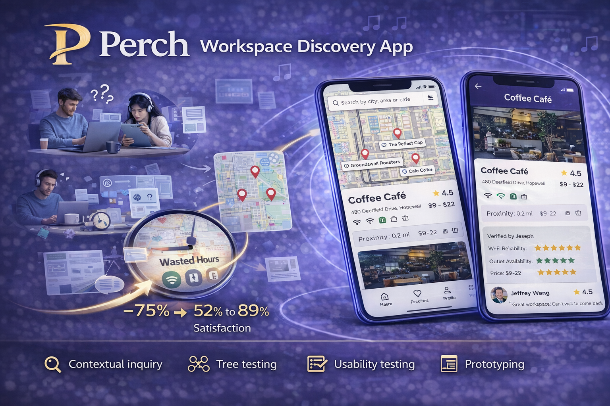

Transforming business challenges into user-centered solutions
I help clients solve business challenges by understanding user needs and translating requirements into solutions.
Through research, evaluation, and working with teams, I aim to exceed both user expectations and business goals
by delivering technology solutions that actually work (not just on paper).
Portfolio Projects

UX research
Perch: workspace discovery app
Problem: Remote workers and students wasted hours searching for workspaces,
only to discover missing essentials like reliable Wi-Fi or power outlets, disrupting productivity.
Outcome: Verified amenities enabled workspace discovery in under 2 minutes.
Mixed-methods research with 56 participants identified proximity and Wi-Fi quality as critical.
The solution reduced search time by 75% and increased satisfaction from 52% to 89%.
Health
Osseo: digital health for rheumatoid arthritis
Problem: Rheumatoid arthritis patients faced barriers communicating symptoms with
providers, tracking medication adherence, and accessing real-time health data, resulting in delayed
interventions and poor disease management.
Outcome: Real-time symptom and medication tracking through wearable IoT integration
enabled proactive health management. Communication features facilitated seamless patient-provider
collaboration and reduced barriers by 65%. Gamification elements increased engagement with treatment
plans, improved medication adherence, and enabled earlier interventions.
Government
Kane County State Attorney Office
Problem: Citizens couldn't access critical legal information when needed,
preventing understanding of rights and effective use of public services.
Outcome: Citizens found legal resources 60% faster. Independent task completion
increased while support requests decreased, improving public engagement with legal services.
UX research
ADDA website redesign
Problem: Community members couldn't access needed support services and resources,
blocking critical assistance and limiting the organization's mission impact.
Outcome: Redesigned information architecture accelerated resource location by 70%.
Content audit revealed 40% of critical resources were buried 3+ clicks deep. The new structure
increased resource access by 85% and reduced support inquiries by 50%.
Every project teaches me something new about how people work and what they need. I take that understanding and turn it into solutions—whether that's evaluating existing systems, researching user needs, or helping teams implement technology that makes a real difference.